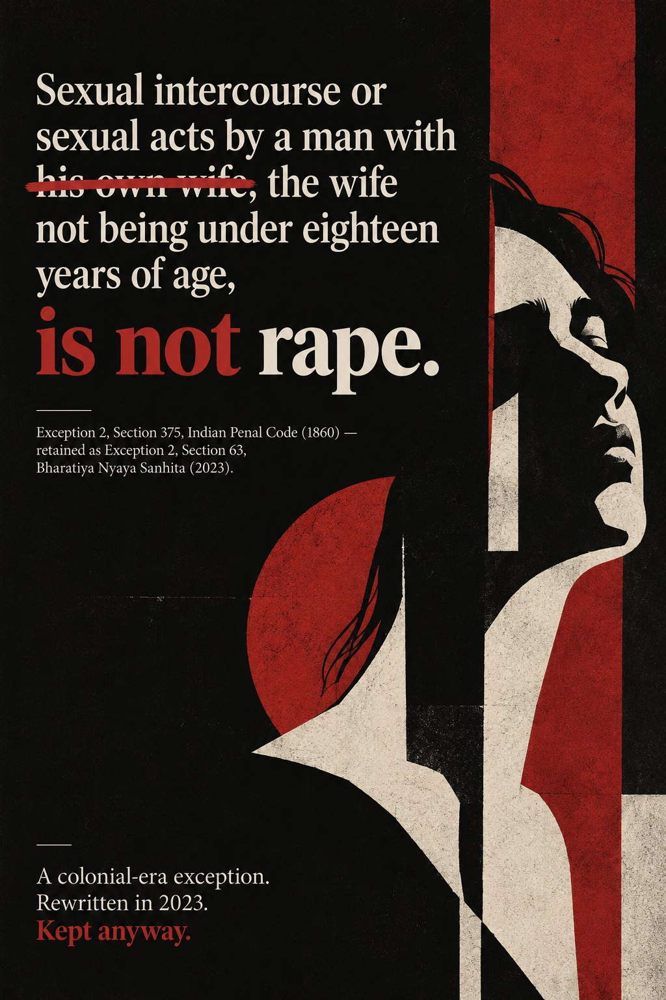

A digital exhibit, added to through the term एक डिजिटल प्रदर्शनी, जो पूरे सत्र में बढ़ती रहेगी
The law has a name for this. It just isn't rape.
कानून के पास इसका एक नाम है। बस वह नाम बलात्कार नहीं है।
In India a husband cannot be prosecuted for raping his adult wife. Not because the act falls outside the definition of rape, but because the law writes one exception into that definition, and marriage is it. This exhibit collects the documents, images and numbers that sit around that exception: what it says, where it came from, who has fought it, and what it costs.
भारत में किसी पति पर अपनी वयस्क पत्नी के बलात्कार का मुकदमा नहीं चलाया जा सकता। इसलिए नहीं कि वह कृत्य बलात्कार की परिभाषा से बाहर है, बल्कि इसलिए कि कानून उस परिभाषा में एक अपवाद लिख देता है, और वह अपवाद है विवाह। यह प्रदर्शनी उन दस्तावेज़ों, तस्वीरों और आँकड़ों को एकत्र करती है जो इस अपवाद के इर्द-गिर्द खड़े हैं: यह क्या कहता है, कहाँ से आया, किसने इससे लड़ाई लड़ी, और इसकी कीमत कौन चुकाता है।

Exhibit poster, 2026. Original work made for this exhibit, not archival campaign material. प्रदर्शनी पोस्टर, 2026। इस प्रदर्शनी के लिए बनाई गई मौलिक कृति, कोई पुरालेखीय अभियान सामग्री नहीं।
Motif: the marriage thread continues as chain and closes in a lock. Marriage is the point at which the law stops asking about consent. प्रतीक: विवाह का धागा आगे चलकर ज़ंजीर बनता है और एक ताले पर जाकर बंद हो जाता है। विवाह ही वह बिंदु है जहाँ कानून सहमति पूछना बंद कर देता है।
The exception, in its own words
अपवाद, उसके अपने शब्दों में
Click each underlined phrase to see what work it is doing.
यह देखने के लिए कि हर वाक्यांश क्या काम कर रहा है, उस पर क्लिक कीजिए।
Exception 2, Section 375, Indian Penal Code (1860, as read down in 2017) / Section 63, Bharatiya Nyaya Sanhita (2023)
Sexual intercourse or sexual acts by a man with his own wife, the wife not being under eighteen years of age, is not rape.
किसी पुरुष द्वारा अपनी ही पत्नी के साथ संभोग या यौन कृत्य, जबकि पत्नी अठारह वर्ष से कम आयु की न हो, बलात्कार नहीं है।
Three phrases. Each one is load bearing. तीन वाक्यांश। हर एक अपने आप में निर्णायक है।
How the exception has, and has not, moved
यह अपवाद कितना बदला, और कितना नहीं
Every moment it could have gone, from 1860 to the case pending today. Click a year.
हर मौका जब यह हट सकता था, 1860 से आज लंबित मामले तक। किसी वर्ष पर क्लिक कीजिए।
The objects
वस्तुएँ
Four objects across the term. Three are published. Each one has its own page.
इस सत्र में चार वस्तुएँ। तीन प्रकाशित हैं। हर एक का अपना पृष्ठ है।
The clause that survived its own rewrite
वह धारा जो अपने ही पुनर्लेखन से बच निकली
Twenty four words of statute, carried from 1860 into the 2023 criminal code.
कानून के चौबीस शब्द, जो 1860 से 2023 की आपराधिक संहिता तक पहुँचे।
Open the object →वस्तु खोलें →The survey that counts what the law refuses to name
वह सर्वेक्षण जो उसे गिनता है जिसे कानून नाम देने से इनकार करता है
The state's own health survey measures the conduct its criminal code will not call rape.
राज्य का अपना स्वास्थ्य सर्वेक्षण उसी आचरण को मापता है जिसे उसकी दंड संहिता बलात्कार नहीं कहती।
Open the object →वस्तु खोलें →The case for keeping it
इसे बनाए रखने का पक्ष
How the state has defended the exception from 2000 to the Supreme Court hearing of 2026.
2000 से 2026 की सर्वोच्च न्यायालय सुनवाई तक राज्य ने इस अपवाद का बचाव कैसे किया।
Open the object →वस्तु खोलें →Coming next
शीघ्र
The first three objects show the wall. The last one turns to the people working on the other side of it.
पहली तीन वस्तुएँ दीवार दिखाती हैं। अंतिम वस्तु उन लोगों की ओर मुड़ती है जो उसके दूसरी ओर काम कर रहे हैं।
About this exhibit
इस प्रदर्शनी के बारे में
The theme
विषय
This exhibit follows one legal fact and its social life. Indian law does not recognise non consensual sex within marriage as rape, provided the wife is an adult. Each object is read against that fact. Does it defend the exception, expose it, work around it, or simply show what it does to the people living under it.
यह प्रदर्शनी एक कानूनी तथ्य और उसके सामाजिक जीवन का पीछा करती है। भारतीय कानून विवाह के भीतर बिना सहमति के यौन संबंध को बलात्कार नहीं मानता, बशर्ते पत्नी वयस्क हो। हर वस्तु उसी तथ्य के सामने रखकर पढ़ी जाती है। क्या वह इस अपवाद का बचाव करती है, उसे उजागर करती है, उसके इर्द-गिर्द रास्ता बनाती है, या बस यह दिखाती है कि इसके नीचे जीने वालों पर इसका क्या असर पड़ता है।
How it is built
यह कैसे बनी है
Each entry pairs one object with an analysis of no more than 500 words, placing it inside the theme and against a reading from the course. Objects carry the date they were added rather than a date the exhibit concludes, because it does not conclude. Neither has the law.
हर प्रविष्टि एक वस्तु को अधिकतम 500 शब्दों के विश्लेषण के साथ जोड़ती है, जो उसे विषय के भीतर और पाठ्यक्रम की किसी पठन-सामग्री के सामने रखती है। वस्तुओं पर वह तारीख है जब वे जोड़ी गईं, कोई समापन तिथि नहीं, क्योंकि यह समाप्त नहीं होती। न ही कानून।